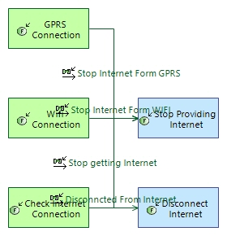

Disconnect to Internet
FunctionalChain
Alzheimer_Watch > Alzheimer_Watch > Logical Architecture > Logical Functions > Root Logical Function > Disconnect to InternetNo description.
Involved functions
| Function | Involvement Description |
|---|---|
Involved functional exchanges
| Functional Exchange | Involvement Description |
|---|---|
Realized Elements
Realizing Elements
Owned diagrams
LFCD Disconnect to Internet
